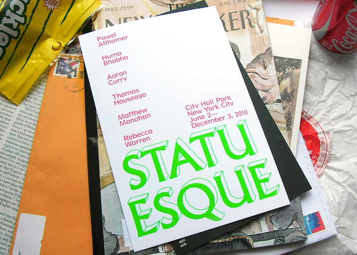
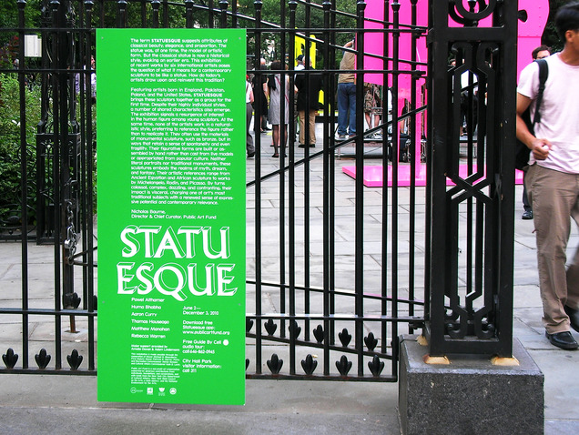
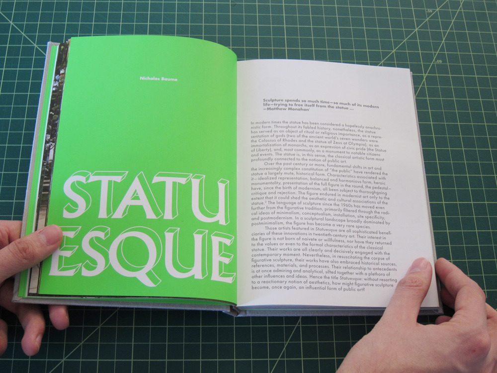
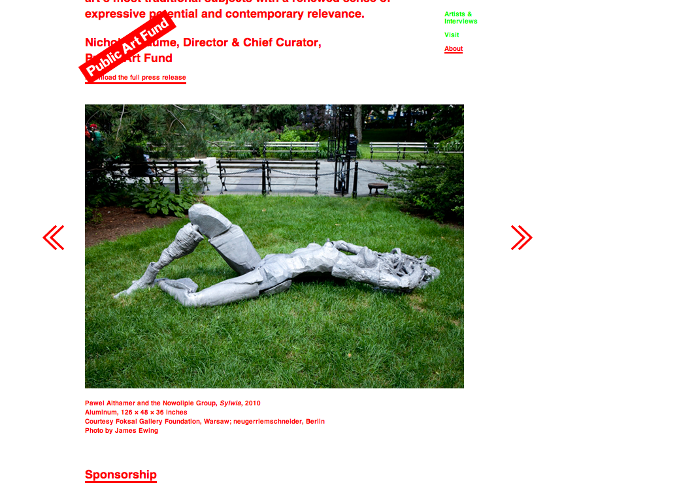

Linked By Air




Statuesque
Medium: Print, Exhibition, Website
Client: Public Art Fund
Year: 2010
Exhibition
We designed the identity, printed matter, signage, and website for Public Art Fund’s outdoor exhibition, Statuesque. The exhibit focuses on contemporary figurative sculpture by Huma Bhabha, Thomas Houseago, and others. Our identity stacks all the content on top of a base made of Albertus, a typeface from the 1930s inspired by raised bronze lettering in public inscriptions. We made it even more 3D. The exhibition was installed in City Hall Park, right around the corner from our old office.
Catalog
The cloth-bound catalogue of the exhibition features full-spread cinematic sequences of perspectives around the park and essays by several authors.